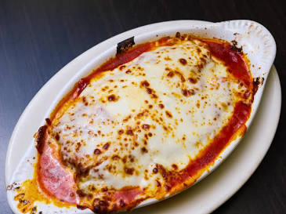

Classic beef lasagna is an Italian-American comfort food staple, built on alternating layers of savory meat sauce, seasoned cheese, and wide pasta ribbons. The foundation is a slowly simmered ragù made from ground beef, garlic, crushed tomatoes, and Italian herbs that infuses every bite with a deep, savory richness.
The richness is balanced by a creamy filling of whole-milk ricotta, parmesan, and fresh herbs, bound with egg to keep each layer distinct and tender. When baked until bubbly and browned, the melted mozzarella crust seals in the steam, creating a sliceable, multi-layered casserole that tastes even better as leftovers.
Heat olive oil in a large skillet or pot over medium heat. Sauté diced onions for 3–4 minutes until soft, then add minced garlic and cook for 1 minute. Add ground beef, breaking it apart until fully browned. Drain excess fat, stir in tomato paste, crushed tomatoes, Italian seasoning, salt, and black pepper. Simmer on low heat for 20–25 minutes.
In a medium mixing bowl, stir together the ricotta cheese, beaten egg, half of the grated Parmesan (½ cup), a pinch of salt, black pepper, and chopped fresh parsley until smooth and evenly combined.
Bring a large pot of salted water to a rolling boil. Cook the lasagna noodles according to package instructions until just al dente (usually 8–10 minutes). Drain and lay them flat on oiled baking sheets or parchment paper to prevent sticking.
Preheat your oven to 375°F (190°C). Spread 1 cup of meat sauce across the bottom of a 9x13-inch baking dish. Lay 3 to 4 noodles over the sauce, spread a third of the ricotta mixture over the noodles, ladle more meat sauce on top, and sprinkle with 1 cup of mozzarella. Repeat for two more full layers, finishing with sauce, the remaining mozzarella, and the remaining Parmesan on top.
Cover loosely with foil (tented so cheese doesn't stick) and bake for 25 minutes. Remove foil and bake uncovered for another 15–20 minutes until the cheese is bubbly and golden brown. Let rest on the counter for 15 minutes before slicing.